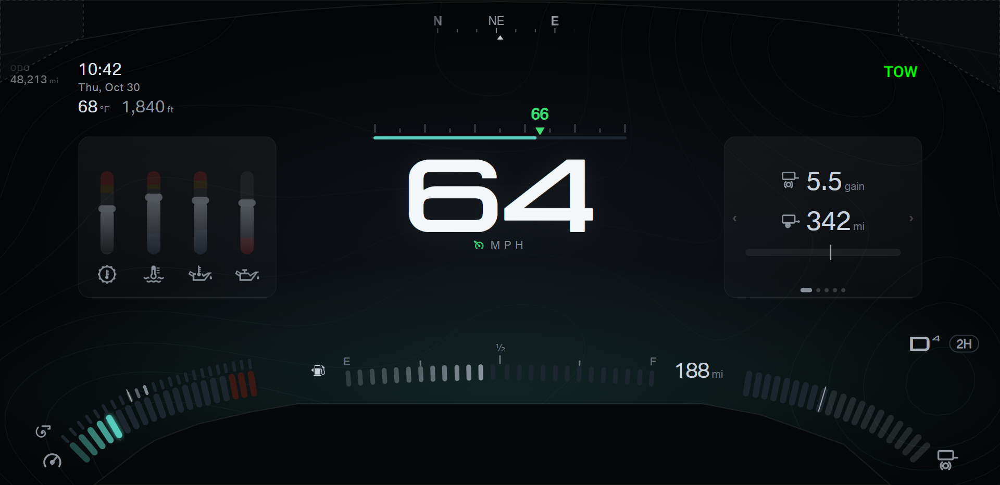

F150 cluster · Design round 32 · Towing A · Cruise on the speed bar
Your direction: cruise shows a small arrow on the speed bar. While you raise or lower the set speed, the number shows above the arrow, then goes away quietly.
A small cue near MPH shows that cruise is on. Every shot passes the margin check (capture.js: 24 shots).
Live demo: set speed steps up three times and down twice.
- Arrow: green, on top of the bar at the set speed, pointing down. A dark outline keeps the arrow apart from the ticks.
- Number: green, above the arrow. A change shows the number at once; the number holds 3 s after the last change, then fades over 0.6 s.
- The large cruise readout under MPH is gone. In reverse, R still takes the center row.
- Truck check: the firmware cruise state values for on, set, and adjusting are not verified on the truck, and neither is whether the set speed stays stored after a cancel.
Pick: both, locked (2026-10-30). The cruise symbol beside MPH (amber while on but not set, with MPH in grey; green while set) and the MPH label in green while set. While cruise is on but not set, an amber arrow marks the last set speed, the speed that Resume returns to.
- A · A small cruise symbol beside MPH: amber while cruise is on but not set, green while set.
- B · The MPH label turns green while set. Cruise on but not set shows no cue.
Locked: both cues
cruise on after a cancel: amber arrow at the resume speed
cruise just switched on: no earlier set speed, no arrow
cruise set during an alert
The A and B options
A · cruise set: arrow on the bar, steady cue
B · cruise set: arrow on the bar, steady cue
A · adjusting: the set speed shows above the arrow

B · adjusting: the set speed shows above the arrow
A · six warning lights and cruise set
A · cruise set during an alert
B · reversing: R keeps the center row